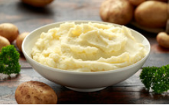

Mashed Potato
Home

Description
This is a recipe for mashed potatoes.
Each serving will be enough for one person, feel free to multiply ingredients by the amount of people you're making this for.
Ingredients
- Water
- a twenty fifth of the weight of the water in salt
- two medium sized potatoes
How to make
- Fill 80% of the water's container in water.
- Heat the water until you see steam.
- While the water is heating remove the potatoes' shells
- Put the salt in the water (Add more salt if you must).
- Put the potatoes in the water for 25 minutes.
- Take the potatoes out of the water
- Mash the potatoes with a rock or something